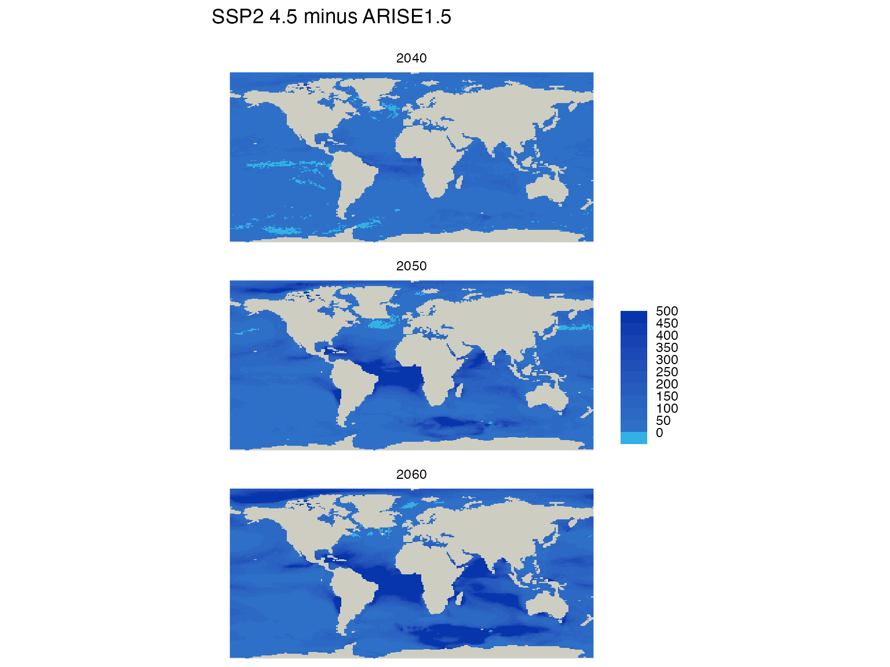
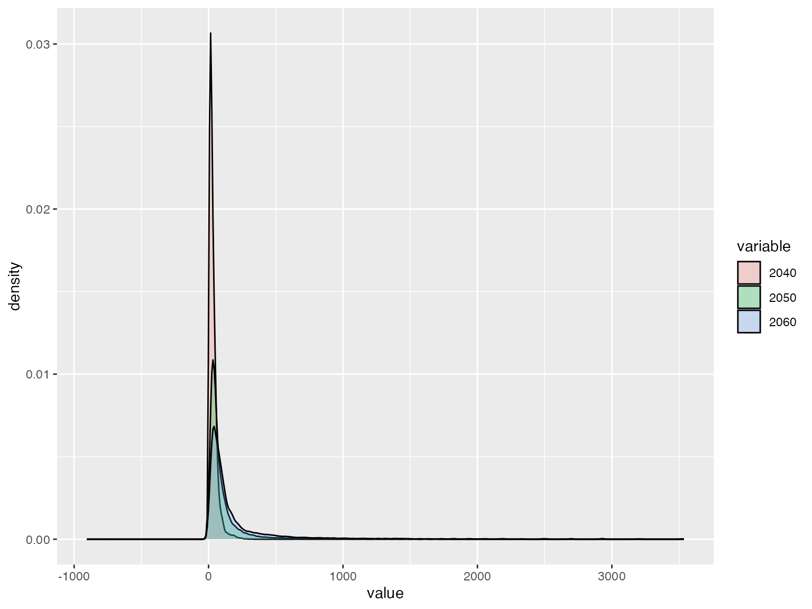
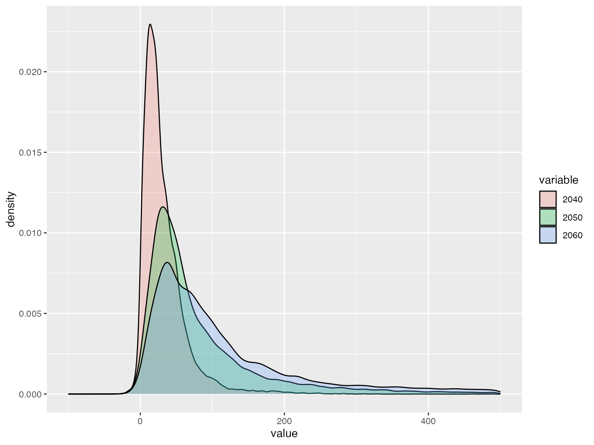

Plotting differences of rasters
plotting_differences.Rmd
# read from the environment
db_file <- mhwci::get_dbfile()
#> Warning in mhwci::get_dbfile(): default dbfile set to
#> /Users/billspat/Code/SpaCELab/marine_heatwave_work/mhwci/db/mhwci_v4.db
print(db_file)
#> [1] "/Users/billspat/Code/SpaCELab/marine_heatwave_work/mhwci/db/mhwci_v4.db"
try(dbDisconnect(db))
#> Error in dbDisconnect(db) : could not find function "dbDisconnect"
db<- mhwci::mhw_connect(db_file)
# this may take signifigant memory
arise10_raster_list <- durations_by_decade_raster(db, mhw_table = "arise10_decade_metrics")
arise15_raster_list <- durations_by_decade_raster(db, mhw_table = "arise15_decade_metrics")
ssp245_raster_list <- durations_by_decade_raster(db, mhw_table = "ssp245_decade_metrics")
ssp245_raster_list
#> class : SpatRaster
#> dimensions : 178, 287, 3 (nrow, ncol, nlyr)
#> resolution : 1.25, 0.9424084 (x, y)
#> extent : -178.125, 180.625, -78.2199, 89.5288 (xmin, xmax, ymin, ymax)
#> coord. ref. : WGS 84 / World Equidistant Cylindrical (EPSG:4087)
#> source(s) : memory
#> names : 2040, 2050, 2060
#> min values : 5, 5, 5
#> max values : 3650, 3650, 3650
arise_diff <- ssp245_raster_list - arise15_raster_list
plot_rasters_squish_outliers(arise_diff,
title = "SSP2 4.5 minus ARISE1.5",
subtitle = "",
scale_label = "",
palette="water",
max_threshold_value = 500,
break_width = 50
)
There is not a red-white-blue color scheme, this is using the ‘water’ palette. You could also try the ‘blues’ palette.
Difference Density plots
This is not the best way to do this. The density plot requires the database to be in ‘long form’ or
value decade
3 2040
2 2040
...
3.1 2050
etcThis does not remove outliers so it’s hard to visualize
Note it requires the ‘reshape’ package, which you may have to install
diff_values<- data.frame(lapply(arise_diff, terra::values))
names(diff_values)<- decades
diff_values_long_form <- na.omit(reshape::melt(diff_values))
#> Using as id variables
#plot full range of difference, which includes a huge range
g<- ggplot(diff_values_long_form , aes(x=value, fill=variable)) + geom_density(na.rm = TRUE, alpha = 0.25)
print(g)
# this just strips out the outliers, which removes data, but it looks nicer
g+ xlim(-100, 500)